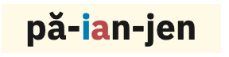
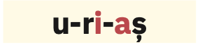
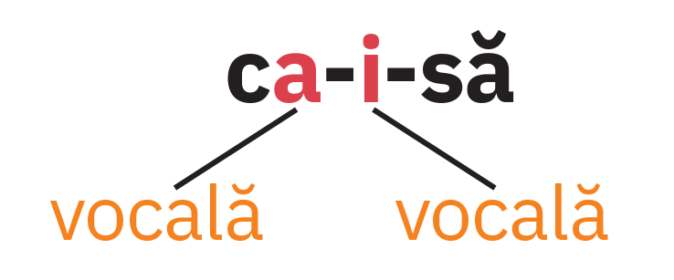

- Cum o cheamă pe fetița din ilustrația alăturată? Precizează sunetele care alcătuiesc prenumele ei.
- Din ce sunete este alcătuit numele și prenumele tău? Dar al colegului tău/colegei tale de bancă?
U1
Acasă, în familie, printre cărți
Limbă română
Lecția 15. Diftongul, triftongul, hiatul
Pentru început
Diftongul
Explorare
- Ce fel de sunete transcriu literele colorate din cea de-a doua silabă a cuvântului păianjen?
- Unde se află vocala în raport cu semivocala în cuvântul vai? Dar în a doua silabă a cuvântului păianjen?
- Care este vocala și care este semivocala din cuvântul biet?
- Precizează dacă în cuvântul geam există un grup alcătuit dintr-o semivocală și o vocală sau doar o vocală.
- Câte sunete se aud atunci când pronunți verbul e? Ce fel de sunete sunt acestea?

Repere
Diftongul
este grupul de sunete alcătuit dintr-o vocală
și o semivocală, pronunțate în aceeași silabă.
Diftongul este urcător
sau ascendent
când este alcătuit dintr-o semivocală și o vocală,
aflate în această succesiune, ca în cuvântul floa
-re.

Diftongul este coborâtor
sau descendent
când este alcătuit dintr-o vocală și o semivocală,
aflate în această succesiune, ca în cuvântul
mâi-ne.

Când grupurile de litere ce, ci, ge, gi, che, chi, ghe, ghi
se află înaintea unei vocale, nu formează, de obicei, diftongi.
De exemplu, în cuvântul ceas există consoana [č],
vocala [a] și consoana [s], iar în cuvântul gheață,
prima silabă este alcătuită din consoana [g’] și vocala [a].
În unele forme ale verbului a fi (este, e, eram
etc.) și în pronumele personale el, ele, litera inițială
e se pronunță cu diftongul [ĭe].
Triftongul
Explorare
- Precizează din câte silabe este alcătuit cuvântul tigroaică și felul sunetelor din care este alcătuită fiecare dintre acestea.
- Desparte în silabe cuvântul leoaică. Din ce fel de sunete este alcătuită a doua silabă?
- Notează, în caiet, câte un cuvânt care să conțină, într-o silabă, următoarele grupuri de sunete: eoa și iai.
- Câte sunete auzi atunci când pronunți pronumele personal eu? Ce fel de sunete sunt fiecare dintre acestea?
- Precizează din câte silabe este alcătuit grupul de cuvinte te-ai și ce tipuri de sunete (vocale, semivocale, consoane) intră în componența sa.
34
Limbă română
Acasă, în familie, printre cărți
L15
Repere
Triftongul este grupul de sunete alcătuit dintr-o vocală și
două semivocale pronunțate în aceeași silabă.

Grupurile de litere ce, ci, ge, gi, che, chi, ghe, ghi,
atunci când se află înaintea unei vocale, nu formează, de
obicei, triftongi. De exemplu, în a doua silabă a cuvântului
strângeau (-geau) există consoana [ğ], vocala [a]
și semivocala [ŭ], ceea ce înseamnă că grupul [aŭ] alcătuiește un diftong.
Pronumele personale eu și ei se pronunță cu triftong,
[ĭeŭ], respectiv [ĭeĭ].
Pentru identificarea diftongilor și triftongilor este necesară despărțirea
în silabe a cuvintelor sau a grupurilor de cuvinte. Uneori, în aceeași
silabă intră cuvinte diferite, legate prin cratimă. Astfel, cuvintele
mi-a (mi-a adus) pronunțate împreună formează un diftong,
iar cuvintele ne-au (ne-au adus) pronunțate împreună
formează un triftong.
Hiatul
Explorare
- Ce sunete transcriu literele marcate colorat în cuvântul uriaș, vocale sau semivocale?
- Precizează ce constați în ceea ce privește poziția lor.

Repere
Hiatul apare între două vocale
alăturate ale aceluiași cuvânt, pronunțate în silabe diferite,
ca în cuvântul caisă.

Aplicații
- Transcrie următoarele cuvinte în caiet. Desparte în silabe cuvintele
plurisilabice și încercuiește diftongii, punând semnul specific
deasupra fiecărei semivocale.
cai • fier • gutui • iulie • leac • moară • noroi • pâine • piață râu - Precizează care dintre diftongii identificați la exercițiul 1 sunt ascendenți și care sunt descendenți.
- Desparte în silabe cuvintele: aripioară, lăcrămioară, leoarcă, maiou, vreau, zgripțuroaică. Încercuiește triftongii și pune deasupra fiecărei semivocale semnul specific.
- Identifică vocalele în hiat din cuvintele: arie, câmpie, ființă, folie, liliac, poet, radio, real, vietate.
- Transcrie tabelul de mai jos în caiet și completează-l corespunzător, folosind cuvintele
din seria dată.
• aer • băiat • cuier • cleioase • dădeau • iubire • junior • pleoapă • poet • proiect • suiau • zoologCuvinte care conțin diftong Cuvinte care conțin triftong Cuvinte care conțin vocale în hiat - Ce fel de diftongi sunt cei identificați la exercițiul anterior?
- Precizează diftongii și triftongii din versurile de mai jos.
„Aruncarea suliței
Cât e lungul uliței.
Cine o aruncă? Vreau,
Vreau să știu ca să i-o iau.
După vrăbii mâța Miau
Da cu unghii: sulițe
Lungi cât două ulițe.”
Marin Sorescu, Aruncarea suliţei
35